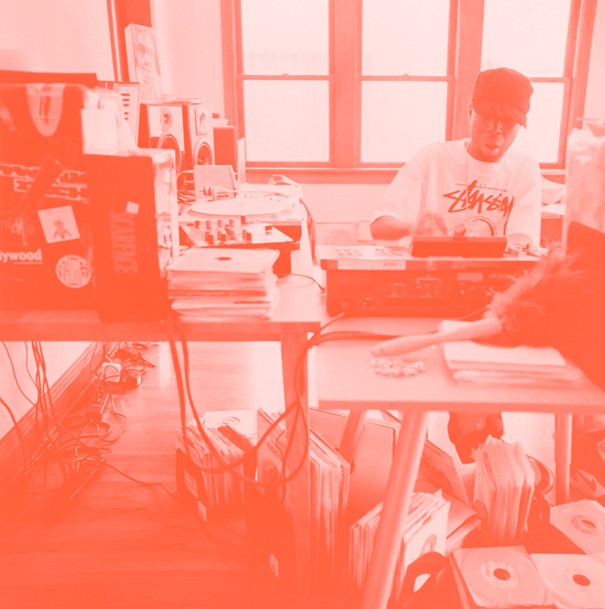

J Dilla aka James Yancey, Jay Dee 1974-2006 Stones Throw began working with J Dilla in the early days of his solo career in the early 2000s. He would soon collaborate with Madlib in the group Jaylib, and eventually releasing the solo album Donuts on Stones Throw in 2006, which has come to be regarded as one of his signature works. J Dilla passed away on the morning of February 10th, 2006 at the age of 32. He had suffered for over three years with an incurable blood disease, and had also been diagnosed with lupus. He left behind a body of work which will be loved and rediscovered for years to come.
Born and raised on the east side of Detroit, Dilla -- James Yancey -- was forced by his parents to become involved with music, and he was a record fanatic at a young age, absorbing funk and rap singles and jazz albums, from Slave to Jack McDuff. He learned to play cello, keyboards, trumpet, and violin, but drums got him like nothing else. He tried his hand at producing tracks on a tape deck by using the pause and record buttons, and he also took up MC'ing. In 1988, he formed Slum Village with Pershing High School friends Baatin and T3. It wasn't until 1992, after receiving some valuable guidance from fellow Detroiter Amp Fiddler, that his talent really began to take shape. A session keyboardist who had worked with Prince, Parliament, and Enchantment, Fiddler taught Dilla how to use the Midi Production Center drum machine. Dizzying quantity of posthumous albums, EPs, and singles, most notably a greatly expanded edition of the Ruff Draft EP, were issued throughout the decade that followed.
In 2014, Dilla's mother, who was involved in many of those releases, donated her son's MPC and Minimoog Voyager synthesizer to the Smithsonian's National Museum of African American History and Culture. The Diary of J Dilla, which originated as an early-2000s project for MCA, saw release in 2016. MCA had signed Dilla for his reputation as a beat maker, but Dilla confounded the major label by switching to MC mode and enlisting the likes of comrades House Shoes, Waajeed, Madlib, and Pete Rock as producers. After an extended period that entailed major legal obstacles and the recovery of recordings, the album was released in 2016 on the reactivated Pay Jay label through Mass Appeal. Yet another poshumous release arrived in 2017. Titled Motor City, that set consisted of previously unreleased instrumentals selected and sequenced by Maureen Yancey. Donuts, an album of instrumentals that Dilla completed during one of his extended hospital stays, was released on February 7, 2006, his 32nd birthday. Three days later, while staying at his Los Angeles home with his mother, Maureen "Ma Dukes" Yancey, he passed away, a victim of cardiac arrest.
